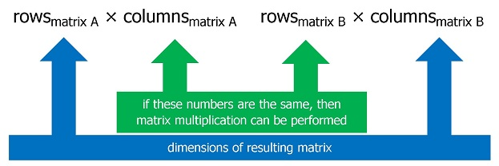

Arithmetic Operations on Matrices
Spring 2019: Question 2 (use C language to write this program)
Write a program to calculate the result of various arithmetic operations on two matrices.
Input instructions: For each matrix:
- First, input the number of rows and columns of the matrix, separated with a space.
- Next, input the data of the matrix, with each number separated with a space.
- Note that each matrix can have a maximum size of 10 x 10.
Output instructions:
- Output the addition, subtraction, and multiplication result of the two matrices. Leave a blank row after each matrix.
- If the multiplication of two matrices cannot be performed, output ERROR.

| Sample Input | Expected Output |
|---|---|
|
4 3 2 1 4 5 3 9 3 0 7 8 6 3 4 3 8 5 7 7 5 3 8 6 3 7 4 2 |
10 6 11 12 8 12 11 6 10 15 10 5 -6 -4 -3 -2 -2 6 -5 -6 4 1 2 1 ERROR |